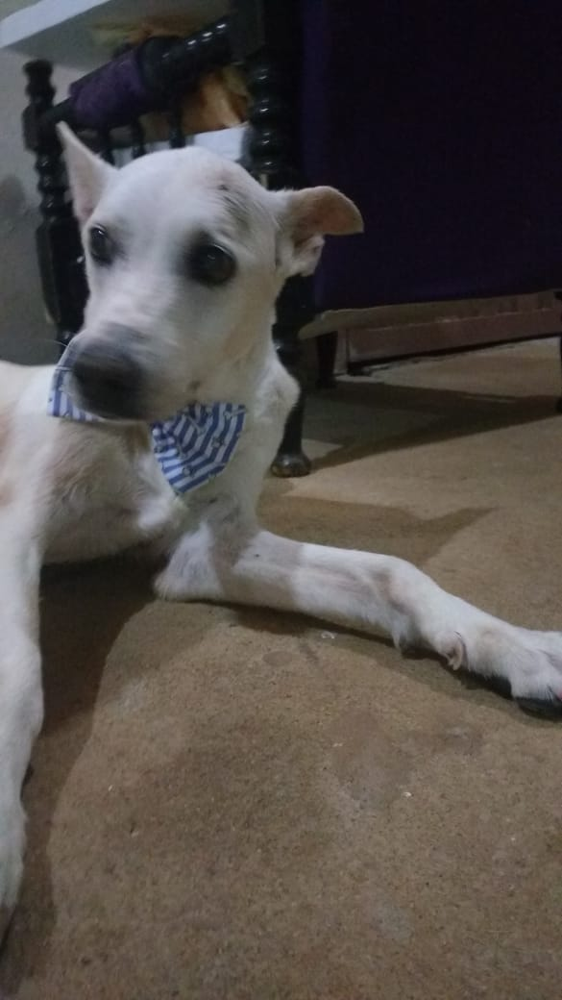

Alô, alô, planeta Terra chamando, planeta Terra chamando
Esta é mais uma edição do diário de bordo de Isabela Dias, falando diretamente do mundo da Lua, onde tudo pode acontecer
Dessa vez, o diário de bordo terá informações nem tão confidenciais assim sobre essa que vos esreve. Direcione sua nave para saber mais sobre meu espaço!

Beginning
Da pacata cidade de Porto Ferreira, no dia das bruxas do ano de 1999, surgia um ser iluminado que foi fruto de um "acidente" entre um casal jovem e bonito. Oito anos depois, a luz em pessoa mudou-se
para a badalada cidade vizinha, no mesmo interior de São Paulo, com incríveis 70 mil habitantes e, a partir daí, tudo muda. As portas, ou as porteiras, que viriam a se abrir e as pessoas com que se relacionaria
iriam mudar as escolhas e mal sabia ela, Isabela, que antes a "cidade do peixe roncador" em que se mudou era chamada por ela como a pior do mundo, seria motivo de saudade e agradecimento.
Peculiaridades
Nesse tempo, a personalidade que ia se construindo, dividia tempo com os vários filmes e pôsteres que ela colecionava. Hoje, depois de ter se encantado por um jovem que é uma locadora ambulante,
o repertório só aumenta. Além do filmes, a bike era outra companheira que aos poucos foi trocado por um negócio chato chamado vestibular. E por falar em vestibular, outro sonho que dividia Isabela era a astronomia,
que ela até cogitou estudar em um curso no ensino superior, mas a ideia ficou só como algo lindo e curioso. E mesmo com essas tranquilas características há quem diga que ela é muito brava. Acredito que uma fanta uva
acalme muito fácil.
Profissional
Mesmo tendo admiração pela astronomia, Isabela preferiu desbravar o conhecimento em engenharia elétrica, profissão que sonhava desde a sétima série. Tivera uma prévia no curso técnico em que cursou
automação industrial e se encantou com o que viu. Hoje, a realidade é bem mais díficil que o sonho da sétima série, mas é recompensador para ela quando lembra que conseguiu participar de uma competição de programação
e só de pensar no que vem pela frente, ela terá outro ataque de ansiedade.
The End ?
Prestes a completar os 20 anos, Isabela ainda tem mais sonhos do que concretudes e pode apostar que ela ainda irá mudar de cidades mais algumas vezes. O futuro ela não sabe, mas faz de tudo pra dar certo.